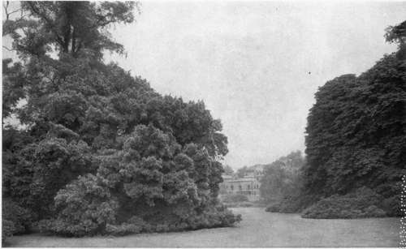

Chapter I. Landscape Gardening
Description
This section is from the book "What England Can Teach Us About Gardening", by Wilhelm Miller. Also available from Amazon: What England Can Teach Us About Gardening.
Chapter I. Landscape Gardening
Why England is called "the most beautiful country in the world"— How we imitate her wrongly, and the only way we can surpass her.
AN AMERICAN'S first day in England, especially if he arrive in spring, is one of mingled rapture and despair. He is intoxicated with the architecture, the history, and the landscape. And if he be honest, all his defiant patriotism melts and runs away. For in his guilty heart he knows that we have not "found ourselves." He understands now why people accuse us of having no "American style" in architecture, in gardening, or in anything else. The charm of English scenery is explained; it is a revelation of national character.
After my first ride into the country around Plymouth I threw myself down in despair. I was gorged with the beauty of it. "What is the use of trying to describe it?" I exclaimed. "We can never have such beauty. Even if we wait a thousand years we can never equal England, for we do not have the English climate".
Then I thought of the millions of dollars we have spent in vain attempts to get English effects—what we have paid merely for roses, which do not bloom all summer with us as they do in England. I thought of all the precious things we can never have in the North, such as English holly and English ivy, the splendour of which had sunk deeply into my soul. I recalled our straight streets, wooden houses, jig-saw ornaments, and gaudy paint. I contrasted the English hawthorn hedge with the American barbed-wire fence, and I was ready to take the next boat home, hopelessly discouraged.
But I dared not go back and hand out the cold comfort which every Englishman offers us: "America will be quite as beautiful a thousand years hence, but in a wholly different way." For one thing we "can't wait." Again, it is only human nature to crave what the English have. For instance, in the depths of my despair I chanced to look out of the window. There stood a cedar of Lebanon glowing with a mellow splendour, like a prophet that has a message for the ages. It seemed as if I must have a cedar of Lebanon for my suburban home at Elizabeth, N. J. Nothing else in the whole wide world would do.
But during the next week there gradually dawned a great light. I remembered how Professor Sargent had found a cedar of Lebanon that will grow in New England. I saw that English yew has its counterpart in the Japanese yew, which thrives with us. I stood before the hundred-foot specimens of California redwood in England and exulted, because I knew that our native hemlock will give practically the same effect. And so I went about England finding out what we can grow that looks like the English material— except to a dry-as-dust botanist. In two months I discovered how we can reproduce practically all the important English effects with native or Japanese material which will be long-lived in America. The details are given chiefly in the second part of this book; the gist of that story, however, I can give here in two sentences : We have jailed to get English effects because we have used European material. We can get many of the English effects by using equivalents from America and the Far East (Japan, China, and Korea), and we can save a million dollars a year* if we want to, by planting long-livedf instead of short-lived material.
IF ENGLAND IS REALLY THE MOST BEAUTIFUL COyNTRY IT IS BECAUSE THERE ONLY DOES LANDSCAPE - NOT FORMAL -GARDENING DOMINATE. THE SOUL OF LANDSCAPE GARDENING IS THE OPEN CENTRAL LAWN, FLANKED BY* TREES. ENGLAND EXCELS AMERICA IN LUXURIANCE AND FINISH. See page 6.
But I soon found something vastly more important — viz.: that the old attitude which makes age and climate insuperable obstacles to progress can be swept aside. Age is not valuable for itself, but only for what it can give. Ask yourself, "What is the most precious thing that the centuries can bestow?" Is it not that serenity of spirit of which mellowness, atmosphere, personality, self-restraint, and repose are merely phases? I grant you that America as a whole may have to wait eight or ten centuries to become as mellow as England, but that is not a practical question which concerns you and me. The important thing is to find out how each one of us can secure mellowness for his home grounds without waiting even one lifetime. And I boldly assert that any one can get go per cent, of all the mellowness that age can give, and this, too, in only five years, prbvided, of course, that the individual has a cultured personality or enough hard sense to follow implicitly the advice of a first-class landscape gardener who really knows the facts. If you want to see proof of this with your own eyes drive past the home of Mr. Thomas Hitchcock, Jr., at Westbury, or of Mr. John L. Lawrence, at Lawrence, L. I. (See plate 3.)
How can we get such luxuriance? One way is to transplant big trees — not many; perhaps two will be enough to frame the picture every beautiful house should make. Another way is to bank some extra large shrubs about the front porch and near the corners. Do you realize that even the small bushes of ordinary nursery size reach their full height in four or five years? And the best way of all to attain mellowness is to use rampant vines, for trees can only hide ugliness, but climbers can transform it into beauty.
* We waste this much on " Dutch stuff " alone. I mean the evergreens, deciduous trees and shrubs which we import by the thousand from Holland and Belgium. That black Dutch soil never amalgamates with American soil. These trees and shrubs are really forced into an unnatural growth, because the water is only eighteen inches below the surface in some of those Dutch nurseries. Dutch stuff always looks best to the buyer, and is so much cheaper that a beginner cannot resist it, but it is likely to die after the first winter. For full details, see Country Life in America for May, 1908, pages 48 to 53.
+ For example, red pine instead of Scotch pine, hedges of Japanese yew instead of English yew, the Colorado form of Douglas spruce instead of the Californian, Oriental spruce instead of Norway, the Colorado white fir instead of the silver fir.
Continue to:
Tags
garden, flowers, plants, England, effects, foliage, gardening